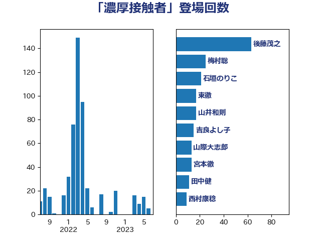

単語「濃厚接触者」

| 後藤茂之 | 自由民主党 | 60 回 |
| 田村憲久 | 自由民主党 | 53 回 |
| 梅村聡 | 日本維新の会 | 34 回 |
| 宮本徹 | 日本共産党 | 33 回 |
| 石垣のりこ | 立憲民主党 | 24 回 |
| 東徹 | 日本維新の会 | 21 回 |
| 篠原孝 | 立憲民主党 | 20 回 |
| 西村康稔 | 自由民主党 | 20 回 |
| 吉良よし子 | 日本共産党 | 17 回 |
| 山井和則 | 立憲民主党 | 17 回 |
| 山際大志郎 | 自由民主党 | 13 回 |
| 田村智子 | 日本共産党 | 13 回 |
| 山添拓 | 日本共産党 | 10 回 |
| 藤田文武 | 日本維新の会 | 10 回 |
| 山本太郎 | れいわ新選組 | 9 回 |
| 山田勝彦 | 立憲民主党 | 9 回 |
| 清水貴之 | 日本維新の会 | 9 回 |
| 倉林明子 | 日本共産党 | 8 回 |
| 山本博司 | 公明党 | 8 回 |
| 岩屋毅 | 自由民主党 | 8 回 |
| 岸田文雄 | 自由民主党 | 8 回 |
| 水岡俊一 | 立憲民主党 | 8 回 |
| 田中健 | 国民民主党 | 8 回 |
| 川合孝典 | 国民民主党 | 7 回 |
| 枝野幸男 | 立憲民主党 | 7 回 |
| 柳ヶ瀬裕文 | 日本維新の会 | 7 回 |
| 田村まみ | 国民民主党 | 7 回 |
| 逢沢一郎 | 自由民主党 | 7 回 |
| 小川淳也 | 立憲民主党 | 6 回 |
| 浅田均 | 日本維新の会 | 6 回 |
| 浦野靖人 | 日本維新の会 | 6 回 |
| 萩生田光一 | 自由民主党 | 6 回 |
| こやり隆史 | 自由民主党 | 5 回 |
| 末松信介 | 自由民主党 | 5 回 |
| 谷川とむ | 自由民主党 | 5 回 |
| 伊佐進一 | 公明党 | 4 回 |
| 古川俊治 | 自由民主党 | 4 回 |
| 岸真紀子 | 立憲民主党 | 4 回 |
| 河西宏一 | 公明党 | 4 回 |
| 浅野哲 | 国民民主党 | 4 回 |
| 片山大介 | 日本維新の会 | 4 回 |
| 福島みずほ | 社会民主党 | 4 回 |
| 西村智奈美 | 立憲民主党 | 4 回 |
| 上田清司 | 国民民主党 | 3 回 |
| 丹羽秀樹 | 自由民主党 | 3 回 |
| 坂本哲志 | 自由民主党 | 3 回 |
| 塩川鉄也 | 日本共産党 | 3 回 |
| 塩田博昭 | 公明党 | 3 回 |
| 大西健介 | 立憲民主党 | 3 回 |
| 天畠大輔 | れいわ新選組 | 3 回 |
| 安江伸夫 | 公明党 | 3 回 |
| 山田美樹 | 自由民主党 | 3 回 |
| 柴田巧 | 日本維新の会 | 3 回 |
| 清水真人 | 自由民主党 | 3 回 |
| 美延映夫 | 日本維新の会 | 3 回 |
| 菅義偉 | 自由民主党 | 3 回 |
| 高木かおり | 日本維新の会 | 3 回 |
| 高橋千鶴子 | 日本共産党 | 3 回 |
| 井坂信彦 | 立憲民主党 | 2 回 |
| 伊藤孝恵 | 国民民主党 | 2 回 |
| 伊藤孝江 | 公明党 | 2 回 |
| 佐々木紀 | 自由民主党 | 2 回 |
| 原口一博 | 立憲民主党 | 2 回 |
| 城井崇 | 立憲民主党 | 2 回 |
| 小西洋之 | 立憲民主党 | 2 回 |
| 岡本あき子 | 立憲民主党 | 2 回 |
| 志位和夫 | 日本共産党 | 2 回 |
| 新藤義孝 | 自由民主党 | 2 回 |
| 杉久武 | 公明党 | 2 回 |
| 松山政司 | 自由民主党 | 2 回 |
| 横沢高徳 | 立憲民主党 | 2 回 |
| 玉木雄一郎 | 国民民主党 | 2 回 |
| 稲津久 | 公明党 | 2 回 |
| 西岡秀子 | 国民民主党 | 2 回 |
| 三木圭恵 | 日本維新の会 | 1 回 |
| 三浦信祐 | 公明党 | 1 回 |
| 上川陽子 | 自由民主党 | 1 回 |
| 中司宏 | 日本維新の会 | 1 回 |
| 中山展宏 | 自由民主党 | 1 回 |
| 中川正春 | 立憲民主党 | 1 回 |
| 中野洋昌 | 公明党 | 1 回 |
| 丸川珠代 | 自由民主党 | 1 回 |
| 仁木博文 | 無所属 | 1 回 |
| 佐藤啓 | 自由民主党 | 1 回 |
| 佐藤英道 | 公明党 | 1 回 |
| 加藤勝信 | 自由民主党 | 1 回 |
| 古屋範子 | 公明党 | 1 回 |
| 古川元久 | 国民民主党 | 1 回 |
| 吉田とも代 | 日本維新の会 | 1 回 |
| 吉田はるみ | 立憲民主党 | 1 回 |
| 和田義明 | 自由民主党 | 1 回 |
| 大串博志 | 立憲民主党 | 1 回 |
| 太栄志 | 立憲民主党 | 1 回 |
| 奥野総一郎 | 立憲民主党 | 1 回 |
| 小池晃 | 日本共産党 | 1 回 |
| 山本香苗 | 公明党 | 1 回 |
| 川田龍平 | 立憲民主党 | 1 回 |
| 徳永エリ | 立憲民主党 | 1 回 |
| 打越さく良 | 立憲民主党 | 1 回 |
| 木村英子 | れいわ新選組 | 1 回 |
| 本村伸子 | 日本共産党 | 1 回 |
| 松村祥史 | 自由民主党 | 1 回 |
| 榛葉賀津也 | 国民民主党 | 1 回 |
| 櫻井周 | 立憲民主党 | 1 回 |
| 浜地雅一 | 公明党 | 1 回 |
| 深澤陽一 | 自由民主党 | 1 回 |
| 源馬謙太郎 | 立憲民主党 | 1 回 |
| 熊谷裕人 | 立憲民主党 | 1 回 |
| 玄葉光一郎 | 立憲民主党 | 1 回 |
| 田島麻衣子 | 立憲民主党 | 1 回 |
| 石井苗子 | 日本維新の会 | 1 回 |
| 磯崎仁彦 | 自由民主党 | 1 回 |
| 福岡資麿 | 自由民主党 | 1 回 |
| 舩後靖彦 | れいわ新選組 | 1 回 |
| 西田実仁 | 公明党 | 1 回 |
| 角田秀穂 | 公明党 | 1 回 |
| 谷田川元 | 立憲民主党 | 1 回 |
| 赤澤亮正 | 自由民主党 | 1 回 |
| 足立康史 | 日本維新の会 | 1 回 |
| 逢坂誠二 | 立憲民主党 | 1 回 |
| 野田国義 | 立憲民主党 | 1 回 |
| 金村龍那 | 日本維新の会 | 1 回 |
| 長友慎治 | 国民民主党 | 1 回 |
| 阿部知子 | 立憲民主党 | 1 回 |
| 馬場伸幸 | 日本維新の会 | 1 回 |
| 高野光二郎 | 自由民主党 | 1 回 |
| 鰐淵洋子 | 公明党 | 1 回 |
| 麻生太郎 | 自由民主党 | 1 回 |